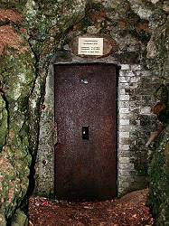

| In English |
| In English |
Linkenboldshöhle
Touristische Informationen:
 |
| Bild: die Umgebung der Höhle, die Höhle befindet sich in dem Hügel in Bildmitte. |
| Ort: | An der Straße Albstadt-Onstmettingen nach |
| Öffnungszeiten: | Zweimal im Jahr. 1997: Vatertag und 2. Sonntag im September. |
| Eintrittspreise: | - |
| Typ: | Ganghöhle |
| Licht: | elektrisch |
| Dimension: | Eingang 906 m N.N., L=139m, T=8°C. |
| Führungen: | D=30min. |
| Fotografieren: | |
| Zugänglichkeit: | |
| Literatur: | Die Linkenboldshöhle bei Onstmettingen, So war es in Onstmettingen, Heft 12, 1994 |
| Adresse: | |
| Nach unserem Wissen sind die Angaben für das in eckigen Klammern angegebene Jahr korrekt. Allerdings können sich Öffnungszeiten und Preise schnell ändern, ohne daß wir benachrichtigt werden. Bitte prüfen Sie bei Bedarf die aktuellen Werte beim Betreiber, zum Beispiel auf der offiziellen Website in der Linkliste. |
|
Geschichte
|  |
| Bild: der Höhleneingang. |
| 1761 | Beschreibung einer Höhlenbegehung durch den Oberamtmann von Balingen und einen Onstmettinger Bürger. | |
| 1764 | erwähnt der berühmte Mechanikerpfarrer Phillip Matthäus Hahn in einem Lebenslauf die Höhle. | |
| 1810 oder 1811 | Erwähnung im unveröffentlichten Manuskript Topographie von Ebingen von Dr. W. F. Schäffler. | |
| 1823 | Beschreibung in Gustav Schwab: Die Neckarseite der Schwäbischen Alb. Schwab war allerdings nicht selbst in der Höhle, er gibt lediglich eine Beschreibung eines Gewährsmannes wieder. | |
| 1824 | wird die Linkenboldshöhle mehrfach in Ueber die Höhlen der Würtembergischen Alp, in Verbindung mit Beobachtungen über die Basaltformationen dieser Gebirgskette von Prof. Schübler erwähnt. | |
| 1875-76 | Erschließung der Höhle. | |
| 24.6.1876 | am Johannistag, feierliche Eröffnung der Höhle. |
Bemerkungen
Die Linkenboldshöhle ist eine kleine Horizontalhöhle auf der Albhochfläche. Bemerkenswert ist ihre Lage unter einer Kuppe in unmittelbarer Nähe zur Erdoberfläche. Die vorhandenen Tropfsteine wurden leider im Lauf der Zeit zum größten Teil abgeschlagen.
Interessant an der Linkenboldshöhle sind aber auch die Sagen, die sich um sie ranken.
 Auf Google nach "Linkenboldhöhle" suchen...
Auf Google nach "Linkenboldhöhle" suchen... Google Earth Placemark
Google Earth Placemark